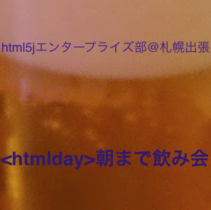
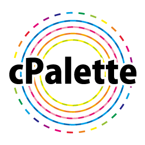
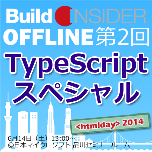
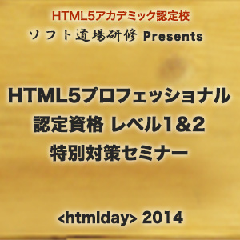
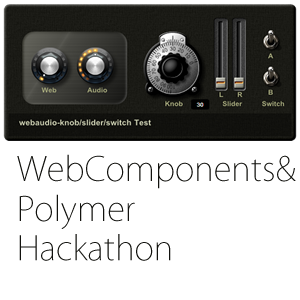
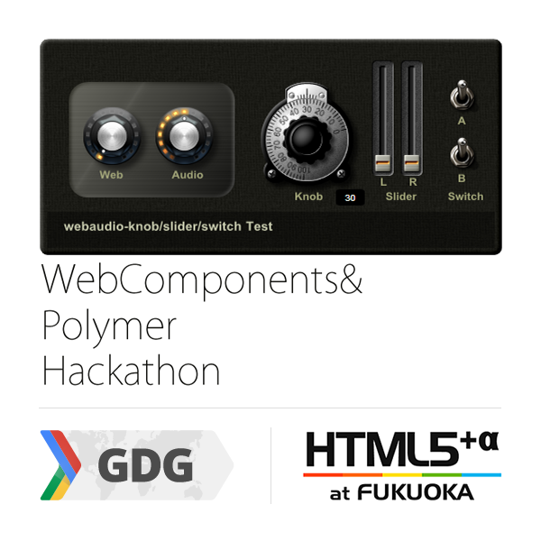

ロゴデータの使用
賛同イベントの主催者の方には、<htmlday>のロゴデータをご自由にお使いいただけます。賛同のお礼を申し上げるメールに、ロゴデータのURLが含まれておりますので、ダウンロードしてご利用ください。
今年もドドンとお祭りだ！！
開催地は日本全国！！
ー <htmlday>に参加して、日本のWebを盛り上げよう！ ー
<htmlday>とは、日本全国でWebに関する多数のイベントを同じ日（6/14）に開催することで、日本のWebを一層盛り上げようという「お祭り」です。
<htmlday>で開催されるイベントは、誰でも開催することができ、誰でも参加することができます。「Webについて考えよう！」（Think the HTML!）という想いがあれば、どんなイベントでも構いません。例えば、Webデザイン、Web制作、その他ディレクションの話でも良いですし、Webネタにした単なる飲み会でも構いません！とにかくWebに関するものであれば何でもOKです！！（昨年のhtmldayの模様はこちらから）
もしよければ<htmlday>に参加して、日本のWebを盛り上げるために、あなたのお力を貸してください！
賛同してくださったイベントには、<htmlday>特製ステッカーを差し上げます。（イベント運営者の方々には特製Tシャツもお渡しします。）
ー HTML5 Japan Cupとも連動！ ー
「HTML5 Japan Cup」（5jcup）とは、<htmlday>と同じくhtml5jが主催するHTML5のアワード（コンテスト）です。今年の<htmlday>は、このアワードの応募期間ということもあり、これを機にアワードに関するアイディアソンやハッカソンなどを開催して頂くことも推奨しております！
よろしければ5jcupの準公式イベントとして何かイベントを企画してみませんか？もちろんイベントは、アイディアソンやハッカソンだけに限りません！（準公式イベントは、5jcupの公式サイトやPRメディア等でも扱われる可能性があります。お申込みの際に、是非ご相談ください。）
<htmlday>に参加するためには、次の2つの方法があります。
Webに関する何らかのイベントを企画してください。
いわゆる「勉強会」でも構いませんし、単なるお茶会や飲み会でも構いません！
<htmlday>に賛同してくださったイベントには、以下の様な特典を用意しています。
賛同イベントの主催者の方には、<htmlday>のロゴデータをご自由にお使いいただけます。賛同のお礼を申し上げるメールに、ロゴデータのURLが含まれておりますので、ダウンロードしてご利用ください。
6名以上の参加者が見込まれるイベントには、イベント運営者への方々へは特製Tシャツを、イベント参加者への配布用に<htmlday>特製ステッカーを送付いたします。イベントの盛り上げにご活用ください。（先着順）
以下の開催イベント一覧（随時更新中！）から、お近くのイベントにご参加ください。
もしかすると、<htmlday>特製ステッカーがもらえるかも！（個別のイベントへの参加は、各イベントのイベントページよりお申込みください）
お住まいのお近くにイベントがない場合は、知り合いに声をかけて、開催することをぜひ検討してみてください！
<htmlday>朝まで飲み会@札幌出張
ひたすら朝までHTML5について熱く語り、そしてお酒を浴びるように飲み、すべてを忘れるかのごとく廃人になる企画です！
htmlday 2014 in Fukushima（仮）
福島のITを盛り上げる「エフスタ!!」よるイベントを計画中です！
第8回 concrete5 青森ユーザーグループ勉強会
オープンソースCMS「concrete5」の第8回青森勉強会を開催します！ 参加者からの持ち込みネタが無い場合concrete5でレスポンシブなサイトを構築する場合の実践デモを行います。 オリジナルテーマを作成する際に困ったことや、こうしたいけれどもやり方がわからない等の相談もOK! もちろん、その場での質問も大歓迎です。
cPalette夏のHTML5祭り"冷やしWeb勉強会、始めました"
Webに関する初歩的な勉強会です。少人数の実習形式でゆるーく進めています。
Build Insider OFFLINE： 第2回 TypeScriptスペシャル
今年は、Web開発者に大人気（Build Insiderの調査で1位）の「TypeScript」がテーマです。参加費は無料。さらに参加者全員にTypeScript 応援Tシャツをプレゼント予定です。
DIST.3 「Photoshop and me」

「職種の垣根を越える」 「特定の技術に依存しない」 「今日から現場で使える」の3つをコンセプトとして、有志が運営する非営利の勉強会です。 デザイナー、デベロッパーという区別をつけて一人一役での仕事をしていた時代は終わろうとしています。職種や技術を超えて、Web制作にまつわるあらゆることを、みんなで集まって学んでいく会を作りたいと考えています。
HTML5朝活会
都内でHTML5の講座を開催している東京アプリ・ワークショップの早朝朝活授業です。昨年に引き続き２回めの開催です。
5jCupハッカソン@charlie
5jCupに向けて軽くハッカソンをします。
Windows女子部Web班（仮）第0回勉強会
Windows女子部Web班（仮）初の勉強会です。初心者歓迎！HTML5カルタでタグを楽しく学びます。
HTML5 API ハッカソン at タネマキ
HTML5のAPIを使ったサービスを1日で作ろーってなイベントです。6/13（金）の22時くらいから6/14（土）の夕方までワイワイガリガリやる会です。個人参戦、団体参戦OK！その場でチームを作ってもOKです。
hifive Student Challenge
Webアプリを作ってみたい！という大学生の皆さんに向けたハッカソンイベントです。 参加費無料、学部生or大学院生や学年は問いません。必要なのは興味とやる気だけ！ HTML5 Japan Cupスポンサーが主催する5jcup準公式イベントで、アプリを作ってコンテストに応募しよう！
HTML5 Night
htmlday最大の合同懇親会！html5j部長、書籍等を執筆しているエキスパートによる網羅的なWeb技術解説が聞けるのは、このイベントだけです。初心者から上級者まで、楽しくWeb標準と触れましょう！ 19時開始なので、他のイベントの帰りに気軽に立ち寄って下さい。
ソフト道場Presents HTML5プロフェッショナル認定資格 特別対策セミナー
秋の開始が発表されたHTMLプロフェッショナル認定資格レベル2の試験範囲紹介と、レベル1の学習で苦労しがちなプロトコル等の解説をいたします。認定資格教科書の割引販売やWeb関連書籍のプレゼント企画もご用意しております。
html5j マークアップ部 htmlday勉強会
htmlday を記念して、html5jマークアップ部の勉強会を開催します。 今年はWeb25周年ということもあり、マークアップ談義で盛り上がりましょう！
秋葉原Cocos2d-JSもくもく勉強会#7
ゲームエンジンCocos2dのJavascript版であるCocos2d-JSのもくもく会です。 Cocos2D-JSで開発したアプリは、ブラウザ上、iPhone,Android上で動きます。 （多分、WindowsやWindowsPhoneでも動きます。やったことないけど。） 勉強会は現在、隔週でやってます。
これで最後の！HTML5 Japan Cup 2014 公式ハッカソン at <htmlday> 2014
2014">5jcupは、最優秀賞賞金100万円、賞金総額350万円、40を超えるスポンサーに支えられた、Webクリエイターが作る、Webクリエイターのためのコンテストです。 応募締め切りは6月30日！ここからアプリを作ろうという人も、ギリギリ間に合うタイミングかも？ みんなで集まって開発することで、弾みをつけていきましょう！
トークセッション・ビギナーの勉強方法を考えよう！
第6回HTML5ビギナーズは、ビギナーなら誰もが抱える「勉強方法」に関する悩みを、会場全体で解決するトークセッションです！
html5を使ってウェブアプリを作ろう！ハッカソン@7F
大宮のコワーキングスペース7Fでhtml5をテーマにハッカソンやります。
INTER-Mediator勉強会2014-#5@htmlday
Webアプリケーションフレームワーク「INTER-Mediator」の勉強会を京都のMac DTPデザイン塾で開催します。今回は、初心者の方向けに、“きちんと”ハンズオンをいたします。MacやWindowsを持ってお集まりください。場所は、JR西大路あるいは阪急西京極です。
朝からeコマース部＠関西
ものづくりとコミュニケーションがうまれるヒミツ基地にて、html5j eコマース部の勉強会を朝から開催します！
TypeScript勉強会@大阪
TypeScript勉強会を開催します！豪華スピーカー5人の方からTypeScriptについての色々お話が聞けます。LTもあるよ！初心者から楽しめる感じにしたいと思います。まだTypeScriptをさわっていない人も、これからTypeScriptを始めたい人も是非遊びに来てくださいー
第25回GDG中国勉強会＠岡山（仮）

HTML5に関連した内容で普段通り勉強会をします。まだ（仮）なので何もかも未定です！
第68回「WEB TOUCH MEETING+a-blog cms」
WEB TOUCH MEETINGは、主に広島県、中国地方の方を対象にウェブ周りの技術や知識に関して自分は知ってる当たり前のことをまずはさわりの部分からでもお互いにしあいましょうという会です。
<htmlday> 2014 in Tokushima
html5に関するもくもく会を実施します！ これから勉強する！という方や、LTで発表したい！という方も歓迎です。
Web Components+Polymer Hackathon
PolymerによりWeb Componentsがジワジワと広まりつつあります。従来のJavaScriptによるUIとはひと違うまったく新しいWeb開発の手法をHackathonを通じて探っていきます。
クリエイティブな軟禁状態 in 宮崎
8時間の軟禁状態のなかで何かをクリエイトするイベントです。
GDG九州 feat. HTML5+α @福岡
去年のhtmldayでの「福岡マークアップ勉強会」とのコラボに続き、今年は「GDG九州」との合同勉強会が決定しました！ GDG九州では、既に「Web Components & Polymer Hackathon」を開催することが決定していますが、「HTML5+α @福岡」も同じ会場でHTML5の周辺技術について、「みんなでワイワイ勉強しよう」というコンセプトのもと、勉強会を開催します。
SCC8.5 ～<htmlday>とお茶会@佐賀～
とお茶会@佐賀～">来る6月14日に行われる全国同時多発イベント「<htmlday>」の開催に際し、佐賀でもなにかやれないかしら？とのことで急遽WEB界隈をテーマにした座談会を行う事になりました。 webに興味のある方、そもそもwebって何よ？という方、web作ってみたいんだけどという方、wordpressちょっと使ってみたいんだけどという方、もちろんディレクター・デザイナー・エンジニアの方も大歓迎です。
 松崎 剛
松崎 剛